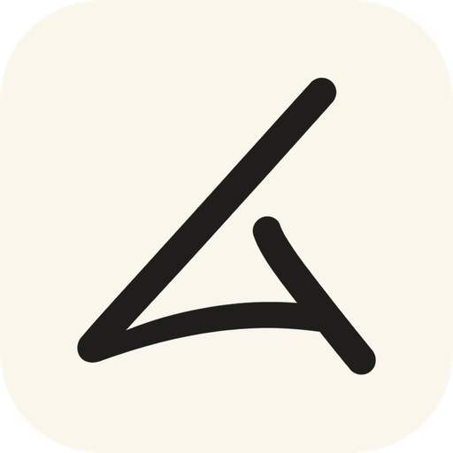

Daling
DGIST 학생을 위한 강의자료·마감·메일 정리 앱
Daling(달링, 예전 이름 '붕어빵')은 DGIST LMS의 강의자료와 과제 마감, 학교 메일, 학사일정과 공지를 자동으로 모아 한 화면에서 보여 주고, 이용자 본인의 Google Drive와 Google Calendar로 정리해 주는 Windows 데스크톱 앱입니다.
앱은 이용자의 PC에서만 실행됩니다. 개발자가 운영하는 서버는 없고, 이용자의 자료나 계정 정보는 개발자에게 전송되지 않습니다.
하는 일
Google 계정으로 하는 일
Google 연결은 선택 기능입니다. 이용자가 앱 설정에서 직접 연결했을 때만, 아래 목적으로만 Google 계정에 접근합니다.
| 권한 | 쓰는 곳 |
|---|---|
Google Drivedrive.file | 앱이 만든 폴더(과목·주차)에 강의자료를 올리고, 이미 올린 파일인지 확인합니다. 앱이 만들지 않은 Drive 파일은 볼 수 없습니다. |
Google Calendarcalendar | 앱 전용 캘린더를 하나 만들고, 그 안에 과제 마감·학사일정·메일 속 일정을 넣고 고칩니다. 같은 일정이 두 번 들어가지 않게 앱이 넣은 일정에 표시를 남깁니다. |
Google에서 받은 정보는 이용자의 PC 안에서만 쓰이며, 개발자에게 보내거나 제3자에게 팔거나 넘기지 않고, 광고나 AI 모델 학습에 쓰지 않습니다. 자세한 내용은 개인정보처리방침을 보세요.
문서
문의
개발자: 김유준 (DGIST 기초학부) · jykim5215@gmail.com
About Daling (English)
Daling (formerly "Bungeoppang", DGIST LMS AutoSaver) is a Windows desktop app for DGIST students. It collects course materials and assignment deadlines from the DGIST LMS, school e-mail, the academic calendar and campus notices into one dashboard, and organizes them into the user's own Google Drive and Google Calendar.
The app runs entirely on the user's PC. There is no developer-operated server, and no user data or credentials are ever sent to the developer.
How Daling uses Google user data
- Google Drive (
drive.file) — uploads course materials into course/week folders that the app creates in the user's Drive, and checks whether a file was already uploaded. The app cannot see Drive files it did not create. - Google Calendar (
calendar) — creates one dedicated calendar and adds or updates assignment deadlines, academic-calendar events and dates found in school e-mail there. Events created by the app are tagged so they are never duplicated.
Google user data is used only on the user's PC to provide these features. It is not sent to the developer, not sold or shared with third parties, and not used for advertising or to train AI models. See the Privacy Policy and Terms of Service.
Contact: Yujun Kim · jykim5215@gmail.com